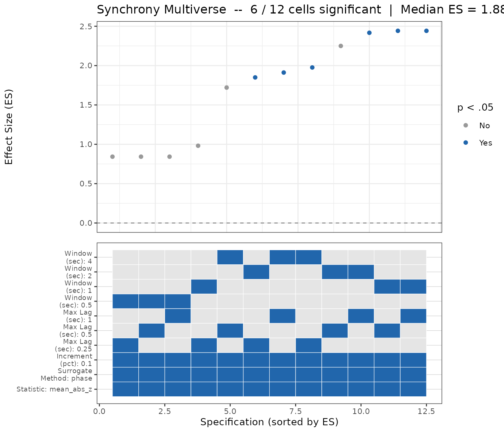

The Parameter-Selection Problem
There is no single “correct” set of WCC hyperparameters. The optimal window size and lag ceiling depend on the timescale of the behavior you are measuring, and those timescales vary enormously: a mother-infant gaze interaction unfolds on a completely different timescale than a high-speed athletic exchange.
This vignette shows three tools bsync provides to
address this problem, in order from quick-and-informed to
thorough-and-multi-dyad:
-
suggest_wcc_params()— PSD-based starting values for a single dyad. -
synchrony_multiverse()— sweep the full parameter grid and view the specification curve. -
autotune_wcc()— automatically select parameters that generalize across a dyad dataset.
select_specification() underpins step 3 and is exported
for advanced users who want to apply the selection rule directly to a
list of multiverse results.
Note: Steps 1 and 3 are WCC-specific helpers.
synchrony_multiverse()in step 2 supports all three estimators ("wcc","wdtw","granger"), so you can run a parameter sweep for any estimator.
1. Data-Driven Starting Values:
suggest_wcc_params()
When you have a representative series in hand, let the signal tell you its own dominant timescale via power spectral density (PSD):
fs <- 80 # sampling rate of sim_dyad (Hz)
params <- suggest_wcc_params(
x = sim_dyad$z_A,
y = sim_dyad$z_B,
sample_rate = fs
)
#> ℹ PSD dominant cycle: 0.8 s (cutoff 1.25 Hz).
#> Warning: Requested `max_delay_sec` (3 s = 240 samples) exceeds window_size/2 (128).
#> ℹ Capping `lag_max` at 128 (= 1.6 s).
#>
#> ── Suggested WCC Parameters ────────────────────────────────────────────────────
#> window_size: 256 (3.2 s)
#> lag_max: 128 (1.6 s)
#> window_increment: 128 (50% overlap)
#> lag_increment: 1
params
#> $window_size
#> [1] 256
#>
#> $lag_max
#> [1] 128
#>
#> $window_increment
#> [1] 128
#>
#> $lag_increment
#> [1] 1The PSD identifies the 0.5 Hz dominant cycle (~2 s period). The
4-cycles-per-window heuristic (Boker et al., 2002) then gives
window_size = round(2 * 4 * 80) = 640 samples, subject to
the hard constraints (see ?suggest_wcc_params):
-
window_size >= 2 * lag_max(SUSY lag-cap rule) -
window_size <= length(x) / 2(series-length ceiling) - Minimum-samples floor for a stable r
If you already know the behavioral timescale from theory, pass it directly as an override:
params_expert <- suggest_wcc_params(
x = sim_dyad$z_A,
y = sim_dyad$z_B,
sample_rate = fs,
event_duration_sec = 2 # 0.5 Hz cycle = 2 s
)
#> ℹ Using supplied `event_duration_sec` = 2 s.
#>
#> ── Suggested WCC Parameters ────────────────────────────────────────────────────
#> window_size: 640 (8 s)
#> lag_max: 240 (3 s)
#> window_increment: 320 (50% overlap)
#> lag_increment: 1
params_expert
#> $window_size
#> [1] 640
#>
#> $lag_max
#> [1] 240
#>
#> $window_increment
#> [1] 320
#>
#> $lag_increment
#> [1] 1Either way, plug the result directly into wcc():
results <- wcc(
x = sim_dyad$z_A,
y = sim_dyad$z_B,
window_size = params$window_size,
lag_max = params$lag_max,
window_increment = params$window_increment,
lag_increment = params$lag_increment
)
generics::glance(results)
#> # A tibble: 1 × 7
#> mean_abs_z n_windows window_size window_increment lag_max lag_increment
#> <dbl> <int> <dbl> <dbl> <int> <int>
#> 1 1.05 14 256 128 128 1
#> # ℹ 1 more variable: statistic <chr>Window overlap (overlap_pct)
suggest_wcc_params() also derives a
window_increment from overlap_pct, which
controls how far the window shifts on each step:
-
0% overlap (
overlap_pct = 0): the window jumps completely forward — fastest, but lowest temporal resolution. -
50–75% overlap (the default
0.5): a balanced choice for exploratory analysis. -
Increment of 1 (near-complete overlap): highest
resolution, and feasible for typical datasets because
bsyncuses a C++ prefix-sum core.
2. Visualizing the Specification Curve:
synchrony_multiverse()
A single parameter set is a single analytic choice. The synchrony multiverse shows you how your conclusion changes across the full grid of defensible choices. The headline metric is effect size vs. the matched-null surrogate, not raw synchrony (which autocorrelation inflates).
# Sweep window sizes 0.5 s to 4 s and lag from 0.25 s to 1 s
set.seed(2026)
mv <- synchrony_multiverse(
x = sim_dyad$z_A,
y = sim_dyad$z_B,
estimator = "wcc",
sample_rate = 80,
window_sec = c(0.5, 1, 2, 4),
lag_sec = c(0.25, 0.5, 1),
n_surrogates = 100L
)
mv
#>
#> ── Synchrony Multiverse Analysis (wcc) ─────────────────────────────────────────
#> Specifications: 12 (12 computable)
#> Surrogates per cell: 100
#> Significant (p < .05): 6 of 12 (50%)
#> Median ES: 1.881 [IQR: 1.345]
#> Sign-consistent (sig. cells): 100%
generics::glance(mv)
#> # A tibble: 1 × 9
#> estimator n_cells n_valid n_significant pct_significant median_es iqr_es
#> <chr> <int> <int> <int> <dbl> <dbl> <dbl>
#> 1 wcc 12 12 6 0.5 1.88 1.34
#> # ℹ 2 more variables: sign_consistent <dbl>, n_surrogates <int>
plot(mv)
The specification curve (top panel) sorts parameter specifications by effect size; the choice dashboard (bottom panel) reveals which analytic choices drive the result. If synchrony is robust, most cells should be significant regardless of the specific hyperparameters.
The full specification grid is available as a tibble via
tidy() or as_tibble():
head(generics::tidy(mv))
#> # A tibble: 6 × 15
#> estimator window_sec lag_sec increment_pct surrogate_method statistic
#> <chr> <dbl> <dbl> <dbl> <chr> <chr>
#> 1 wcc 0.5 0.25 0.1 phase mean_abs_z
#> 2 wcc 1 0.25 0.1 phase mean_abs_z
#> 3 wcc 2 0.25 0.1 phase mean_abs_z
#> 4 wcc 4 0.25 0.1 phase mean_abs_z
#> 5 wcc 0.5 0.5 0.1 phase mean_abs_z
#> 6 wcc 1 0.5 0.1 phase mean_abs_z
#> # ℹ 9 more variables: window_size <dbl>, lag_max <int>, window_increment <dbl>,
#> # n_windows <dbl>, observed <dbl>, null_mean <dbl>, null_sd <dbl>, es <dbl>,
#> # p <dbl>Running a multiverse for WDTW or Granger
synchrony_multiverse() is not WCC-only. Pass
estimator = "wdtw" or estimator = "wgranger"
to sweep the same grid for those estimators. For Granger, the result
carries two effect-size columns (es_xy and
es_yx, one per causal direction) and no lag axis:
set.seed(2026)
mv_g <- synchrony_multiverse(
x = sim_dyad$z_A,
y = sim_dyad$z_B,
estimator = "wgranger",
sample_rate = 80,
window_sec = c(1, 2, 4),
lag_sec = 0, # ignored for Granger; ar_order used instead
n_surrogates = 100L
)
generics::glance(mv_g)
#> # A tibble: 1 × 9
#> estimator n_cells n_valid n_significant pct_significant median_es iqr_es
#> <chr> <int> <int> <int> <dbl> <dbl> <dbl>
#> 1 wgranger 3 3 0 0 0.458 0.220
#> # ℹ 2 more variables: sign_consistent <dbl>, n_surrogates <int>3. Multi-Dyad Parameter Selection: autotune_wcc()
When you have a dataset of multiple dyads,
autotune_wcc() selects parameters that are both detectable
(significant vs. the null in many dyads) and stable (consistent across
dyads with different signal characteristics).
# Simulate a dataset: three dyads sharing the same 0.5 Hz synchrony structure
set.seed(42)
dyad_list <- replicate(
3,
list(x = sim_dyad$z_A, y = sim_dyad$z_B),
simplify = FALSE
)
best <- autotune_wcc(
dyad_list = dyad_list,
sample_rate = 80,
window_sec = c(1, 2, 4),
lag_sec = c(0.5, 1),
n_surrogates = 100L
)
#> Running synchrony_multiverse() on 3 dyad(s) (3 window x 2 lag cells each)...
#>
#>
#> ── Auto-Tune Result ──
#>
#>
#>
#> Window size: 160 samples (2 s)
#>
#> Max lag: 80 samples (1 s)
#>
#> Increment: 16 samples
#>
#> Sig. rate: 100% of dyads
#>
#> Median ES: 2.305 (IQR = 0.102)
best
#> $window_size
#> [1] 160
#>
#> $lag_max
#> [1] 80
#>
#> $window_increment
#> [1] 16
#>
#> $lag_increment
#> [1] 1
#>
#> $window_sec
#> [1] 2
#>
#> $lag_sec
#> [1] 1
#>
#> $sig_rate
#> [1] 1
#>
#> $median_es
#> [1] 2.305021
#>
#> $iqr_es
#> [1] 0.1019227
#>
#> $score
#> [1] 2.25406
#>
#> $n_dyads
#> [1] 3
#>
#> $n_cells_gated
#> [1] 2
#>
#> $dyad_multiverses
#> $dyad_multiverses[[1]]
#>
#> ── Synchrony Multiverse Analysis (wcc) ─────────────────────────────────────────
#> Specifications: 6 (6 computable)
#> Surrogates per cell: 100
#> Significant (p < .05): 2 of 6 (33.3%)
#> Median ES: 2.146 [IQR: 0.186]
#> Sign-consistent (sig. cells): 100%
#>
#> $dyad_multiverses[[2]]
#>
#> ── Synchrony Multiverse Analysis (wcc) ─────────────────────────────────────────
#> Specifications: 6 (6 computable)
#> Surrogates per cell: 100
#> Significant (p < .05): 2 of 6 (33.3%)
#> Median ES: 2.322 [IQR: 0.412]
#> Sign-consistent (sig. cells): 100%
#>
#> $dyad_multiverses[[3]]
#>
#> ── Synchrony Multiverse Analysis (wcc) ─────────────────────────────────────────
#> Specifications: 6 (6 computable)
#> Surrogates per cell: 100
#> Significant (p < .05): 4 of 6 (66.7%)
#> Median ES: 2.006 [IQR: 0.124]
#> Sign-consistent (sig. cells): 100%Plug the result directly into wcc():
results_tuned <- wcc(
x = sim_dyad$z_A,
y = sim_dyad$z_B,
window_size = best$window_size,
lag_max = best$lag_max,
window_increment = best$window_increment,
lag_increment = best$lag_increment
)
generics::glance(results_tuned)
#> # A tibble: 1 × 7
#> mean_abs_z n_windows window_size window_increment lag_max lag_increment
#> <dbl> <int> <dbl> <dbl> <int> <int>
#> 1 1.12 130 160 16 80 1
#> # ℹ 1 more variable: statistic <chr>How the selection rule works
autotune_wcc() applies a two-stage rule:
Detectability gate. A parameter cell must be significant (p < .05 vs. the matched-null surrogate) in at least
sig_pct(default 50%) of dyads. Cells that fail this gate are excluded.Stability-penalized score. Among gated cells, the score is
median(ES) - iqr_penalty * IQR(ES). This rewards high median ES but penalizes spread, so a parameter set that is consistent across dyads beats one that is spectacular for one dyad but weak for others.
If no cell passes the gate (insufficient data or too few surrogates), a warning is issued and the highest-median-ES cell is returned as a fallback.
Advanced: select_specification() directly
select_specification() is the exported building block
that autotune_wcc() wraps. You can call it directly if you
have already run synchrony_multiverse() per dyad and want
to apply the selection rule yourself — for example, to experiment with
different sig_pct or iqr_penalty values
without re-running the full sweep:
# Run synchrony_multiverse() for each dyad
set.seed(42)
mv_list <- lapply(dyad_list, function(d) {
synchrony_multiverse(
x = d$x,
y = d$y,
estimator = "wcc",
sample_rate = 80,
window_sec = c(1, 2, 4),
lag_sec = c(0.5, 1),
n_surrogates = 100L
)
})
# Apply the selection rule directly
best_adv <- select_specification(
mv_list = mv_list,
sig_pct = 0.5,
iqr_penalty = 0.5
)
best_adv
#> $best_row
#> # A tibble: 1 × 15
#> estimator window_sec lag_sec increment_pct surrogate_method statistic
#> <chr> <dbl> <dbl> <dbl> <chr> <chr>
#> 1 wcc 2 1 0.1 phase mean_abs_z
#> # ℹ 9 more variables: window_size <dbl>, lag_max <int>, window_increment <dbl>,
#> # n_windows <dbl>, observed <dbl>, null_mean <dbl>, null_sd <dbl>, es <dbl>,
#> # p <dbl>
#>
#> $sig_rate
#> [1] 1
#>
#> $median_es
#> [1] 2.305021
#>
#> $iqr_es
#> [1] 0.1019227
#>
#> $score
#> [1] 2.25406
#>
#> $n_gated
#> [1] 2Choosing the grid to sweep
Start with a range informed by suggest_wcc_params() on a
representative dyad. A practical workflow:
# Step 1: get a data-driven starting point
params2 <- suggest_wcc_params(
x = sim_dyad$z_A,
y = sim_dyad$z_B,
sample_rate = 80
)
#> ℹ PSD dominant cycle: 0.8 s (cutoff 1.25 Hz).
#> Warning: Requested `max_delay_sec` (3 s = 240 samples) exceeds window_size/2 (128).
#> ℹ Capping `lag_max` at 128 (= 1.6 s).
#>
#> ── Suggested WCC Parameters ────────────────────────────────────────────────────
#> window_size: 256 (3.2 s)
#> lag_max: 128 (1.6 s)
#> window_increment: 128 (50% overlap)
#> lag_increment: 1
# Step 2: build a grid around that starting point
w_base <- params2$window_size / 80 # convert to seconds
grid_windows <- unique(round(w_base * c(0.5, 1, 2), 1))
grid_lags <- unique(round(grid_windows / 2, 1))
cat("window_sec:", grid_windows, "\n")
#> window_sec: 1.6 3.2 6.4
cat("lag_sec: ", grid_lags, "\n")
#> lag_sec: 0.8 1.6 3.2
set.seed(42)
best2 <- autotune_wcc(
dyad_list = dyad_list,
sample_rate = 80,
window_sec = grid_windows,
lag_sec = grid_lags,
n_surrogates = 100L
)
#> Running synchrony_multiverse() on 3 dyad(s) (3 window x 3 lag cells each)...
#>
#>
#> ── Auto-Tune Result ──
#>
#>
#>
#> Window size: 512 samples (6.4 s)
#>
#> Max lag: 256 samples (3.2 s)
#>
#> Increment: 51 samples
#>
#> Sig. rate: 100% of dyads
#>
#> Median ES: 1.601 (IQR = 0.105)
best2
#> $window_size
#> [1] 512
#>
#> $lag_max
#> [1] 256
#>
#> $window_increment
#> [1] 51
#>
#> $lag_increment
#> [1] 1
#>
#> $window_sec
#> [1] 6.4
#>
#> $lag_sec
#> [1] 3.2
#>
#> $sig_rate
#> [1] 1
#>
#> $median_es
#> [1] 1.600661
#>
#> $iqr_es
#> [1] 0.105206
#>
#> $score
#> [1] 1.548058
#>
#> $n_dyads
#> [1] 3
#>
#> $n_cells_gated
#> [1] 1
#>
#> $dyad_multiverses
#> $dyad_multiverses[[1]]
#>
#> ── Synchrony Multiverse Analysis (wcc) ─────────────────────────────────────────
#> Specifications: 9 (9 computable)
#> Surrogates per cell: 100
#> Significant (p < .05): 1 of 9 (11.1%)
#> Median ES: 1.232 [IQR: 0.321]
#> Sign-consistent (sig. cells): 100%
#>
#> $dyad_multiverses[[2]]
#>
#> ── Synchrony Multiverse Analysis (wcc) ─────────────────────────────────────────
#> Specifications: 9 (9 computable)
#> Surrogates per cell: 100
#> Significant (p < .05): 1 of 9 (11.1%)
#> Median ES: 1.3 [IQR: 0.107]
#> Sign-consistent (sig. cells): 100%
#>
#> $dyad_multiverses[[3]]
#>
#> ── Synchrony Multiverse Analysis (wcc) ─────────────────────────────────────────
#> Specifications: 9 (9 computable)
#> Surrogates per cell: 100
#> Significant (p < .05): 1 of 9 (11.1%)
#> Median ES: 1.227 [IQR: 0.233]
#> Sign-consistent (sig. cells): 100%References
Boker, S. M., Xu, M., Rotondo, J. L., & King, K. (2002). Windowed cross-correlation and peak picking for the analysis of variability in the association between behavioral time series. Psychological Methods, 7(3), 338–355.
Tschacher, W., & Meier, D. (2020). Physiological synchrony in psychotherapy sessions. Psychotherapy Research, 30(5), 558–573.
See also
-
vignette("wcc-workflow")for the full WCC analytical pipeline -
vignette("surrogate-testing")for details on circular-shift vs. phase-randomization surrogates -
vignette("determine-downsampling")for PSD-based guidance on choosing a sample rate